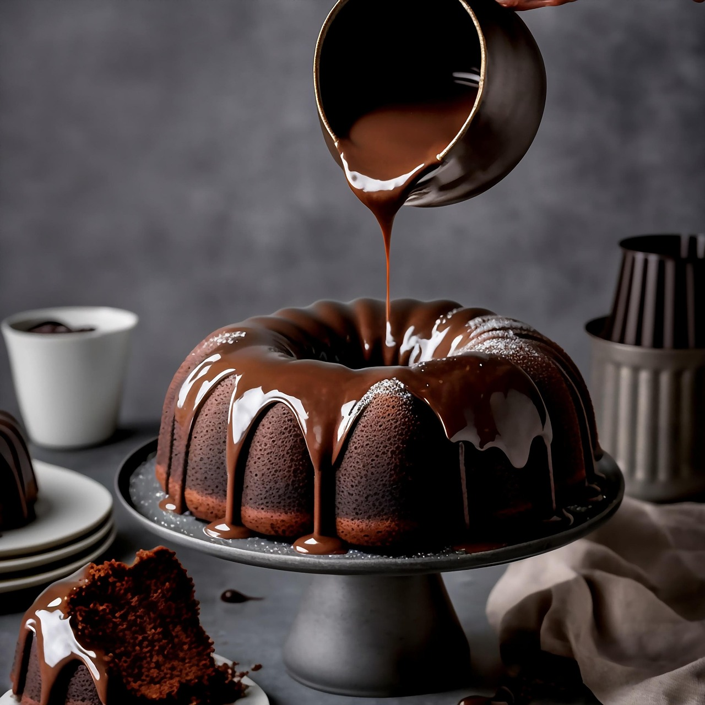

Schokoladenkuchen
- 200g Butter
- 200g Zucker
- 180g Mehl
- 200ml Milch
- 45g Kakaopulver
- 45g Kokosraspel
- 3 Eier
- 2 TL Backpulver
- Schokoglasur
Zubereitung
- Die Butter mit dem Zucker schaumig schlagen und danach die Eier unterrühren.
- Anschließend Mehl, Backpulver, Milch, Kakao und Kokosraspel hinzugeben und alles gut verrühren.
- Die Masse in eine 26er Silikon Gugelhupfform gießen.
- Bei 180 °C Ober-/Unterhitze im vorgeheizten Backofen 60 min. backen.
- Nach abkühlen mit Schokoglasur überziehen.
Rezept erstellt von
 Adam
Adam